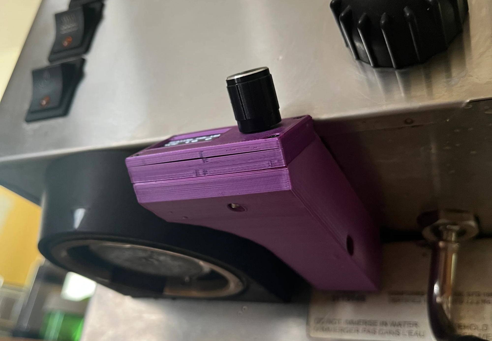

Miss Silvia PID Control
2025
I designed and installed a low-cost, tunable PID temperature controller for a Rancilio Silvia espresso machine, replacing the stock thermostat to dramatically reduce temperature fluctuations and improve brew consistency.
Motivation
Most consumer espresso machines rely on a simple on/off thermostat, which causes large temperature oscillations during heating. These fluctuations can exceed 10 °C, leading to inconsistent extraction. I designed a precise PID controller using low-cost electronics to maintain a stable boiler temperature while preserving usability and reversibility.
Key Features
- Adjustable brew and steam temperatures
- Programmable PID values for precise heating control
- LCD temperature display with rotary encoder input
- Web-based control panel with live temperature graphs
- Scheduled automatic heating
Demo Video
PID-controlled espresso machine in operation
Temperature Control Comparison
Below is a comparison of the machine heating behavior with and without the PID controller. The stock thermostat exhibits a large overshoot and oscillation, while the PID controller produces a smooth, well-damped response.
Machine heating without controller
Machine heating with PID controller
Design Principles
- Usability: A single rotary knob interface preserves the original user experience. Anyone familiar with the machine can operate it without training.
- Cost: All components were selected to minimize cost while maintaining reliability, keeping the project accessible and reproducible.
- Reversibility: Only two small mounting holes were added; the machine can easily be returned to its original configuration.
Web Interface
The ESP32 hosts a local web application that allows full control and monitoring of the system. The page includes power controls, brew/steam mode selection, live temperature plots, scheduling, and PID tuning. Settings are stored on the microcontroller and persist across reboots.
Components
Products are linked below. Many can be sourced more cheaply from vendors such as AliExpress.
- ESP32-C6 microcontroller
- TSIC306 TO-92 temperature sensor
- SSR 40A DA (3–32VDC input, 24–380VAC output)
- SSD1306 0.96" OLED I²C display
- KY-040 rotary encoder module
- USB wall charger and USB-C cable (for powering ESP)
- 3D printed housing (Onshape CAD)
- Jumper wires and hookup wire
Hardware Installation
The solid state relay (SSR) is bolted to the internal metal frame using thermal paste, allowing the frame to act as a heat sink. The SSR replaces the brew thermostat but can still be overridden by the steam switch. The steam thermostat remains in place as a safety cutoff.
The TSIC306 temperature sensor is mounted under one of the boiler bolts, with a rubber washer to secure it and some thermal paste as well.
Wiring Schematic
SSR mounted to the machine frame
Temperature sensor mounted to boiler bolt
The USB power supply is spliced into the main power line so the controller remains powered even when the machine is switched off. The electronics are assembled on a prototyping board and mounted inside a 3D-printed enclosure secured beneath the machine.
Software Architecture
The ESP32 runs MicroPython. The software is organized around a controller class and a webserver class. The main script initializes hardware, reads the temperature sensor, drives the SSR using PWM, updates the display, and services web requests.
- Settings saved to file and restored on reboot
- Failsafe shutdown using try/except handling
- Error logging for debugging without a serial connection